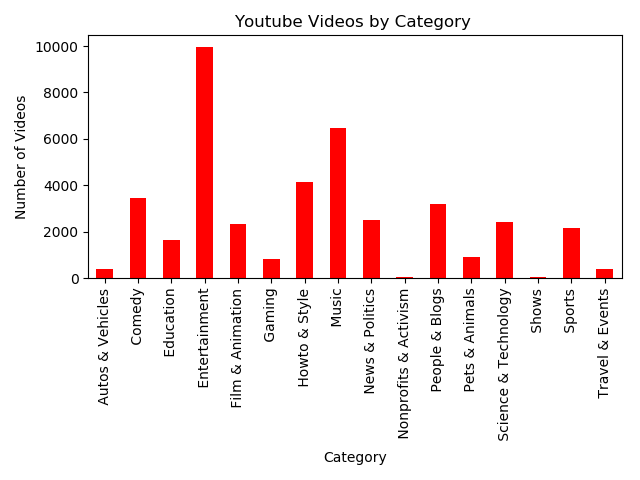
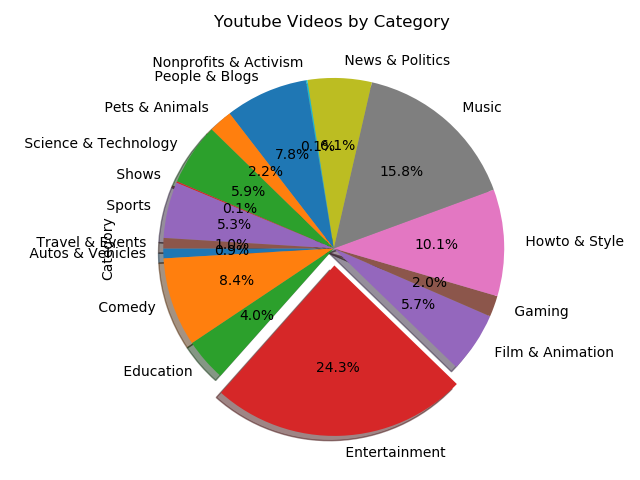
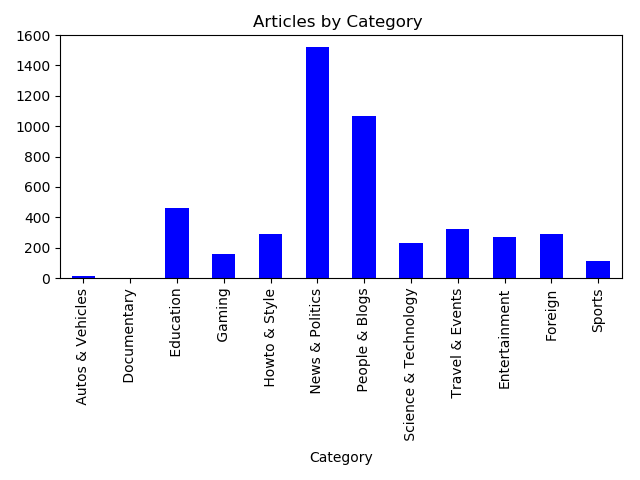

Final Report
Extract
After brainstorming several ideas, we as a group decided that we wanted to see the relationship between news and social media. Basically, if a particular trending category in the news has any effect on a trending topic on YouTube.
For this project, our main YouTube data was extracted from Trending YouTube Video Statistics on the Kaggle website. The raw data came in the form of a .csv file that was downloaded and then pulled into Pandas. We also found the most popular YouTube API video category from a user called “dgp” on GitHub Gist.
For our trending news headline, our second data source was pulled from A Million News Headlines on the Kaggle website. The raw data came in the form of a .csv file that was downloaded and then pulled into Pandas.
Transform
We knew that in order for our analysis work, we had to first transform the raw data from the .csv into a dataset that made sense. Using the Jupyter Notebook, we cleaned the three datasets by converting the time and date to just dates. And then from there, we filte0red out the dates that we wanted to analyze. We found that from 1/4/2018 – 05/01/2018, the dates in both the YouTube data and the News data both overlapped each other. Next, there were a few categories in the News dataset that didn’t match up with the YouTube dataset, so we recategorizes them as best as we could. For example, the category metro or metropolitan about local news became just News & Politics. The cleaned YouTube dataset and the cleaned News dataset was then combined and further transformed by dropping any columns that we thought were not needed. We also formatted some of the column headers to make the whole data frame look better.
Load
To bring everything home, we loaded our final database into MongoDB. In the Jupyter Notebook, we imported pymongo and made a connection to the MongoClient. This took us a few tries, but we finally got it to work.
Visualizations


